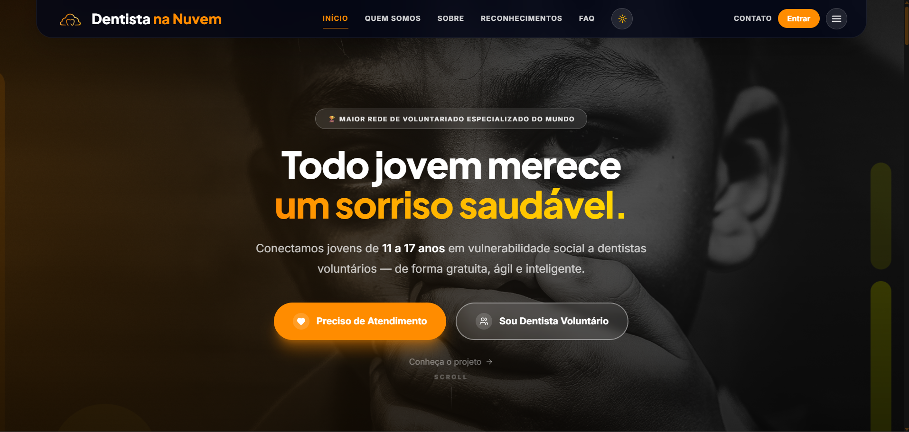

Back-end & linguagens
JavaC# / .NETPythonTypeScriptJavaScriptSpring BootQuarkusNode.jsAPIs RESTful
DISPONÍVEL PARA OPORTUNIDADES
Estudante de Análise e Desenvolvimento de Sistemas na FIAP, com foco em engenharia de dados e software, automação e computação em nuvem.
Olá! Sou Eric Maciel, estudante de Análise e Desenvolvimento de Sistemas na FIAP e desenvolvedor com foco em engenharia de dados e software, automação e computação em nuvem.
Minha trajetória tecnológica começou na TheLED, onde ingressei aos 17 anos em projetos especiais e fui efetivado para a equipe de suporte e sustentação técnica. Por dominar a operação do software dos sistemas, tornei-me ponto focal para a equipe interna e para técnicos em campo, resolvendo incidentes críticos e contribuindo para a estabilidade operacional.
Na FIAP, aprofundei minhas competências em desafios reais. Desenvolvemos uma plataforma para a ONG Turma do Bem, um dos sete projetos selecionados para apresentação institucional. Liderei a modelagem do banco de dados relacional em SQL; integramos IA generativa, criamos mapas de calor para apoiar decisões e implementamos geolocalização e triagem inteligente para conectar pacientes a dentistas voluntários.
Quero atuar em um ecossistema de alta escala e disponibilidade, onde a robustez dos dados e o pensamento crítico impactem milhões de usuários. Quero contribuir com dedicação, raciocínio analítico para resolução de problemas e capacidade de aprendizado rápido.
Baixar meu currículo (PDF) ↓Competências e tecnologias
do meu currículo.
Plataforma de odontologia social para a rede Turma do Bem.

CHALLENGE FIAP × TURMA DO BEM · SPRINT 4
A Turma do Bem é a maior rede de voluntariado odontológico do mundo. A plataforma conecta jovens em situação de vulnerabilidade social a dentistas voluntários. O Score TdB prioriza os casos mais graves e organiza o fluxo de triagem, adoção e atendimento.
Testar a aplicação ↗O QUE A PLATAFORMA FAZ
ESTE É SÓ O COMEÇO ✳ MAIS PROJETOS EM CONSTRUÇÃO
Challenge AMAZUL / CTMSP - Marinha
Uma jornada de microlições e desafios interativos para explorar aplicações da tecnologia nuclear e separar mitos de fatos, com explicações objetivas e referências para consulta.
Estou trabalhando na modelagem dos dados e nos scripts Oracle, além da preparação da aplicação conteinerizada para execução na infraestrutura Azure, em alinhamento com a arquitetura compartilhada da equipe.
Certificados de cursos FIAP
— confira cada um no link.
TEM UMA IDEIA, UM PROJETO
OU UMA OPORTUNIDADE?